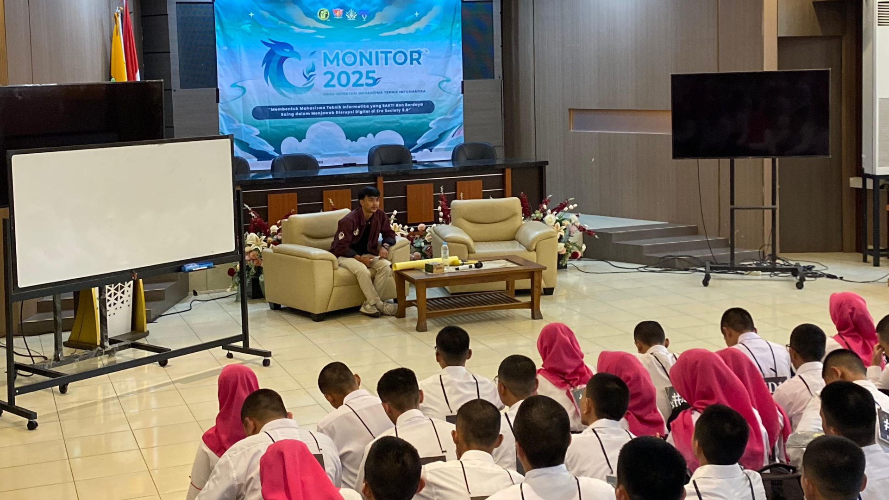

Sabtu, 13 September 2025
#01
Pengenalan Jurursan
Pengantar Logika
KeInformatikaan
Apa itu
Dian Sa'adillah Maylawati, S.Kom., MT., Ph.D
Outcome Based Education (OBE) di Prodi Teknik Informatika UIN Bandung dirancang untuk memastikan setiap mata kuliah memiliki luaran yang jelas dan terukur. Kurikulum OBE menekankan pada pencapaian kompetensi melalui pembelajaran aktif, penilaian berbasis capaian, serta kesesuaian dengan kebutuhan industri dan masyarakat. Dengan sistem ini, mahasiswa diarahkan tidak hanya menguasai teori, tetapi juga mampu mengaplikasikan pengetahuan secara nyata dalam pemecahan masalah informatika.
Capaian Pembelajaran Lulusan (CPL) disusun berdasarkan standar KKNI dan SN-Dikti, meliputi aspek sikap, pengetahuan, keterampilan umum, dan keterampilan khusus. Lulusan diharapkan memiliki komitmen terhadap nilai islami, mampu menyelesaikan permasalahan berbasis komputasi, berinovasi dalam rekayasa teknologi, beradaptasi terhadap perkembangan teknologi baru, serta mampu bekerja sama lintas disiplin dan mengkomunikasikan solusi secara efektif. Dengan CPL ini, profil lulusan diarahkan menjadi profesional yang unggul, kompetitif, dan berakhlak karimah.
Pedoman Akademik di Teknik Informatika UIN Bandung menjadi acuan dalam menjalankan kegiatan perkuliahan, termasuk pengaturan jumlah SKS minimal 144 SKS, mekanisme pengambilan mata kuliah, serta prosedur kerja praktek, tugas akhir, dan program Merdeka Belajar–Kampus Merdeka (MBKM). Pedoman ini juga menyediakan panduan teknis untuk memastikan mahasiswa dapat menyelesaikan studi dengan terarah, mendapatkan pengalaman praktis, serta siap menghadapi tantangan di dunia kerja maupun penelitian.
Bagian Bagian HIMATIF
Apa itu
Kang Diman Faturohman
Ekspektasi adalah harapan, keinginan, prediksi, bayangan, pandangan, dan imajinasi tentang sesuatu di masa depan yang belum terjadi namun kita bayangkan akan terwujud. Ekspektasi juga dapat dipahami sebagai suatu hal yang kita harapkan terhadap kegiatan yang belum kita lakukan, serta sesuatu yang kita inginkan di masa depan yang hanya bisa tercapai dengan usaha diri sendiri. Dalam prosesnya, ekspektasi menuntut kemampuan untuk beradaptasi, sebab tidak semua yang kita bayangkan akan sama persis dengan kenyataan
Ekspetasi Monitor 2025